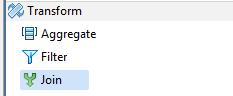

<!doctype html>
<html>
<head>
	<title></title>
</head>
<body></body>
</html>
<title></title>
<p><strong><span style="color:#FF0000;"></span></strong><span style="color:#FF0000;">Accelero Help</span></p>

<p><font face="verdana, geneva, sans-serif"><span style="font-size: 28px;">Join</span></font></p>

<p><span style="font-size:14px;"><span style="font-family:verdana,geneva,sans-serif;">Accelero Release Version 1.0</span></span></p>

<p><span style="font-family:verdana,geneva,sans-serif;"><span style="font-size: 14px;"><b>Join</b>&nbsp; component as the name suggests joins two or more input sources and is present under the Transform category in the component palette. This component can be used to achieve Left, Right, Inner or Outer Joins. By default it contains two input ports, one output port and two unused ports. The number of input ports can be increased in the Join configuration property, accordingly the number of unused ports increase. Output of the join operation is transmitted through the out port. Each unused port transmits records for the specific input that did not satisfy the join condition.</span></span></p>

<p><font face="verdana, geneva, sans-serif"><span style="font-size: 14px;">User is provided with a mapping view to select the input and output fields, pass them as passthrough or map-fields.</span></font></p>

<p><span style="font-family:verdana,geneva,sans-serif;"><span style="font-size: 14px;">The Join component can be easily distinguished in the component palette.</span></span></p>

<p></p>

<p><span style="font-family:verdana,geneva,sans-serif;"><span style="font-size: 14px;">An enlarged version of the same is depicted when dragged on the canvas.</span></span></p>

<p><span style="font-size:14px;"><span style="font-family:verdana,geneva,sans-serif;"></span></span></p>

<p><span style="font-size:14px;"><span style="font-family:verdana,geneva,sans-serif;">For further reference click on the links below:</span></span></p>

<ul>
	<li><span style="font-size:14px;"><span style="font-family:verdana,geneva,sans-serif;"><a href="http://Properties">Properties</a></span></span></li>
	<li><span style="font-size:14px;"><span style="font-family:verdana,geneva,sans-serif;"><a href="http://Mapping View">Mapping View</a></span></span></li>
	<li><span style="font-size:14px;"><span style="font-family:verdana,geneva,sans-serif;"><a href="http://Validations">Validations</a></span></span></li>
</ul>
